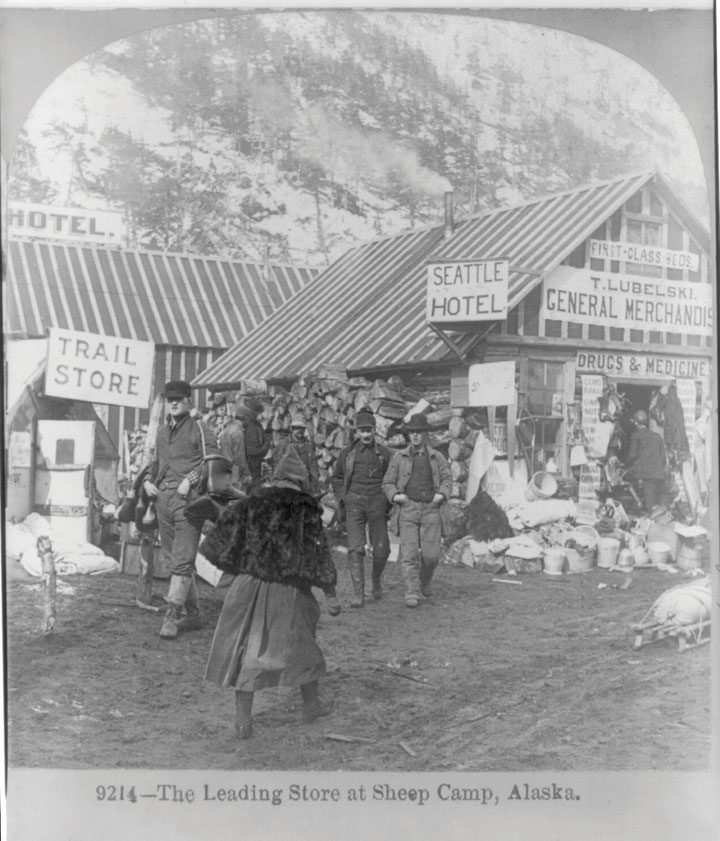
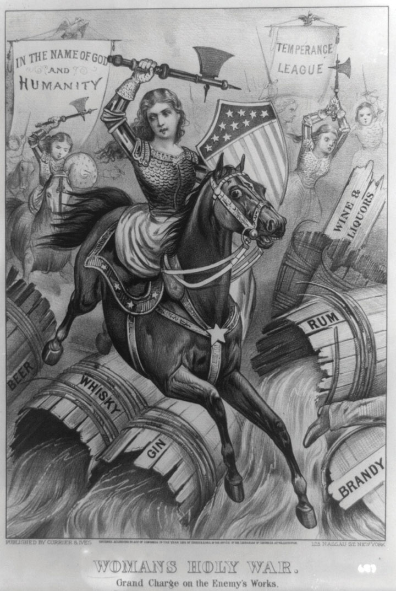
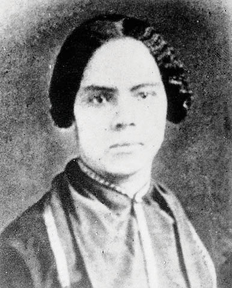
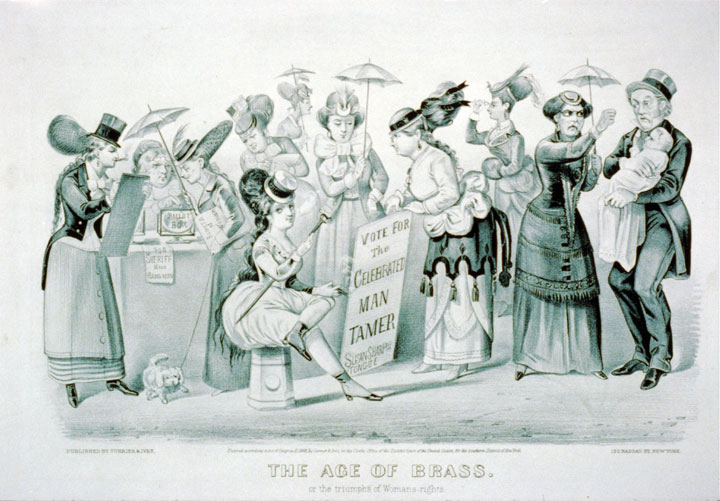
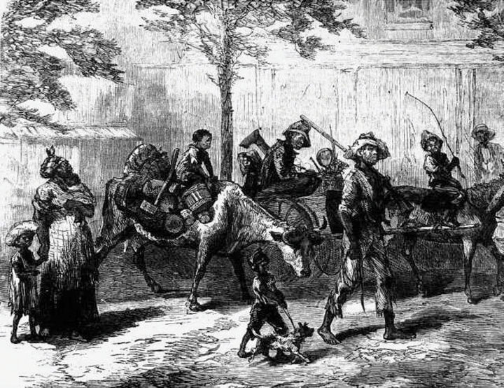

The Homestead Act of 1862A law encouraging Western migration by granting sections of federal lands that were west of the Mississippi River so long as certain conditions were met. Chief among these conditions was that settlers “improve” the land by cultivating fields and building homes and utility buildings. took effect on January 1 of the following year, the same day as the Emancipation Proclamation. For many Americans, both laws seemed to promise liberation. For millions of families, homesteads provided a path to independence through landownership, just as emancipation brought deliverance from bondage and the hope of economic independence. For many, the hardships of life on the Great Plains and a life as a Southern sharecropper offered something less than freedom. The dangers of the Western trek were nothing compared to the trials of former slaves who first tested the Emancipation Proclamation. However, homesteaders who headed west and former slaves who labored in the South shared a common faith that hard work and eventual landownership was the path to achieving the promise of freedom in America.
Horace Greeley was not the first to exhort the young men of his nation to “Go West.” However, his voice as editor of the New York Weekly Tribune carried the most influence. Both as a journalist and presidential candidate in 1872, Greeley expressed the belief held by millions of Americans that Western expansion would act as a “safety valve” for US cities. The option of leaving the city permitted laborers who could not find decent employment or decent housing the option of starting anew in the “salubrious and fertile West.” By removing millions of unemployed and underemployed urban workers, Greeley’s safety-valve theoryA name given by historians to the idea that Western expansion would benefit the leading cities and established rural districts of the East by providing an alternative to wage labor. Without such a “safety valve,” tensions would grow as farmland and jobs became increasingly scarce. suggested, Western expansion would also benefit workers who remained in the cities by reducing the number of workers. As a result, the law of supply and demand would operate in favor of workers who could demand better pay and conditions as employers competed with one another for labor.
Western expansion would succeed where industrial unions and urban reform organizations had failed, many promoters of the West believed. Unscrupulous factory owners would lose their employees and slums would clear themselves, Western boosters predicted. Employers and cities would be compelled to create attractive working and living conditions that would rival the prosperous and “salubrious” life of the homesteader. Eastern businesses would also benefit from Western expansion, Greeley and others argued. Western expansion would create new markets for manufactured goods in America’s interior. Believing in this synergistic relationship between rural expansion, urban renewal, and commercial opportunity, national leaders backed legislation that transferred a billion acres of Western land to homesteaders and railroad developers between the 1860s and 1890s.
Of these billion acres, only 30 percent were granted under the terms of the Homestead Act and other government initiatives that provided free land. The most desirable lands were sold or granted to developers. The rest were distributed to homesteaders who were required to build homes and clear fields, thereby “improving” the land. In addition, homesteaders were required to pay a small fee at the land office when they filed for the deed. The other 700 million acres of Western land were purchased, usually by those who had the financial means to secure fertile lands that were near a navigable river or railroad. The federal government relied on these land sales in an era before federal income tax and toleration for large budget deficits beyond financing wars. Given the importance of land sales, many were concerned that the government’s practice of granting free land to railroad companies to spur construction was a form of graft.
In 1864, Congress granted twenty sections of free land for every single mile of track constructed by the builders of the First Transcontinental RailroadFinanced largely by an 1864 grant of federal lands to the Union Pacific and Central Pacific railroads. The two companies built track between Omaha, Nebraska, and Sacramento, California. San Francisco and Oakland were connected with the East and South when both lines were completed in 1869. Ogden, Utah, served as the connection point between the two rail lines., which would stretch from Omaha to the California coast. The federal government essentially cosigned the railroad’s bonds and also granted the railroad millions of acres of free land that they could sell as they built track. The commercial value of these lands increased significantly as they built the track, providing a constant stream of revenue to the developers as they moved west. In addition to the land sales, the Union Pacific and Central Pacific would completely own and control the track the government subsidized. Although the phrase “corporate welfare” would not come into common usage for another century, it seemed to many as if the federal government had shouldered the risk for the private companies that built the railroads by backing their bonds and then went a step further by giving these companies millions of acres of land. The federal government would eventually grant over 100 million acres to various railroads throughout the West, a fact that concerned many would-be settlers.
Given the state of American finance in the mid-nineteenth century, however, few other ways were available to finance a railroad line of this magnitude. American investors and companies did not have the kinds of resources to finance the construction of a transcontinental railroad. Congress recognized that its land reserves were the only resource the federal government controlled that could be used to finance the completion of such a mammoth project. Without access to a railroad, these lands had little commercial value. In fact, these isolated lands could scarcely be given away as homesteads. However, once a single railroad line connected the West Coast with the East Coast and the Great Plains, the total value of the lands the government still controlled in the vicinity of that railroad line would suddenly become quite valuable. Upon completion of the First Transcontinental Railroad, millions of acres of government land throughout the West would eventually be served by feeder railroads that would connect the hinterlands to the main line. The government’s willingness to give away these lands to spur railroad construction also spurred land sales and resulted in far greater revenue for the government in the long run. The railroad network that grew from the First Transcontinental Railroad allowed the government to sell rather than give away the majority of its lands throughout the West.
Figure 2.7

This photo of homesteaders in Nebraska in 1886 demonstrates the pride that pioneer families took in the homes and farms that they built.
Those who could afford to purchase land near the railroads had the best chance of creating a financially successful farm. However, the majority of Americans could not afford land near railroads. Free land could still be acquired through homestead grants until the 1880s, but these lands were generally of marginal value and isolated. Those with modest resources developed these fields in anticipation of the day when a railroad might be built in the general vicinity. These farmers joined with boosters of nearby towns and pooled their scarce resources to purchase local railroad bonds under promises of repayment and the construction of feeder lines that would connect their farms to the market economy. In these instances, farm families, local merchants, and real estate boosters mortgaged their futures together in hopes that a railroad would bring wealth to their community.
If successful, farm and real estate values increased dramatically, while the holders of the bonds could look forward to repayment of their investment with interest. In many cases, however, the local railroads were ill-conceived and inadequately financed. In such cases, the result was often bankruptcy for the railroad developers and a total loss for the hopeful investors. In dozens of instances throughout the 1880s and beyond, entire towns were built on the hopes of railroad access. Many of these disappeared nearly overnight when it became clear that the railroad would not be built. Many area farmers were so poor they had no choice but to resign themselves to another season of transporting their grain by wagon. In other cases, buildings and homes were moved by wagon to the nearest town with railroad access. As a result, for every successful city created by the railroad, there were also several ghost towns.
Figure 2.8

By 1887, four transcontinental lines connected the West Coast with an expanding rail network throughout the Mountain West and Great Plains.
The workers who built the rails the commercial West was built on may have taken the greatest risks of all. Tens of thousands of construction workers migrated to America from China and Europe with little more than a hope to earn a decent wage and then return to their homelands. Others workers, particularly the Irish and African American laborers who were often recruited by the railroads had lived in the United States for generations. These men were joined by Anglo homesteaders who had lost everything, failed mining prospectors hoping to return home, and orphans barely tall enough to swing a hammer. As a result, the Union Pacific and Central Pacific work camps represented a cross-section of the developing nation. In some ways these camps were both melting pots and the most egalitarian of institutions, establishing pay scales based only on the amount of track built each day. Time-and-a-half bonuses were held as incentive for days when a certain number of miles were completed.
The consequence was both faulty construction and a pace of work that created old men and amputees as quickly as it built track. Under these circumstances, the First Transcontinental Railroad was completed when the westbound Union Pacific crews met with the eastbound Central Pacific on May 10, 1869, at Promontory Point, Utah. Congress soon approved a series of similar land grants that spurred construction of four other major rail lines. The Atchison, Topeka, and Santa Fe line connected Kansas City and the Missouri River Valley to the Southwest in the 1870s. The Southern Pacific linked New Orleans to Southern California in the same decade. The Northern Pacific connected Chicago with Portland in 1883. Ten years later, a fifth transcontinental line was completed even further north, connecting Seattle with the Great Lakes.
The plains of South Texas were among the first areas cleared of bison. By the 1860s, they were home to millions of longhorn cattle. By the end of the Civil War, the nation’s rail system extended to western Missouri—a distance of about eight hundred miles from the pastures of Texas. Responding to market forces, ranchers initiated cattle drives to transport beef from those pastures to the nearest rail terminus by hoof. A crew of a dozen cowboys could surround and drive several hundred cattle across the open prairie. From the railroad terminus, the cattle were shipped directly to butchers in urban markets. The drives were dangerous and dirty, especially for those cattlemen selected to ride at the back of the herds. As the years progressed, the railroad extended further west creating “cow towns” from Wichita, Kansas, to Greeley, Colorado, and eventually, Cheyenne, Wyoming, and Prescott, Arizona. Eventually, the residents of these towns would demand an end to the cattle drive. Despite the mythology that would later be created, the chief complaint of residents of the cattle towns was not bandits or brothels or any of the other form of human depravity. Instead, what was most dreaded by the farmers and ranchers of the Great Plains was a parasite that infected many of the herds in the Southwest and was transported north by the cattle drives. A quick survey of newspapers printed in Abilene City, Texas, and Dodge City, Kansas, during the 1870s will turn up very few gunfights. In their place will be hundreds of articles about the dreaded Texas cattle fever that infected local herds.
Figure 2.9

A cowboy prepares to drive a herd of cattle across the Great Plains. In the horizon, one of his fellow cowboys can be seen among hundreds of cattle.
Infectious bovine diseases failed to capture the imagination of urban America. Perhaps owing to the pervasiveness of human contagion in these communities, city dwellers disregarded these and other real-life dangers that made the West much like the rest of the nation. Instead, Easterners reveled in fictional accounts of high-noon gunfights, bandits, Indian raids, and the mythical cowboy. In reality, cattle town violence was not much different from that of violence in the big cities where most victims were found shot in the back or stabbed by thieves. In the lore created by dime novels, however, shootouts between bandits and sheriffs and the skill of drovers won the West. Over time, Old West fiction became incorporated into the collective memory of the West. The real-life challenges related to weather, disease, fire, commodities markets, bank loans, and mortgages were largely forgotten. In creating a mythical West, the actual lived experience of Westerners was largely discarded. In its place arose a pulp fiction based on epic experiences that appealed to readers seeking a momentary escape from the mundane challenges they faced in their own lives.
Only when discussing the importance of horsemanship and other cowboy skills did the fiction of the West reflect reality. The origins of the rodeo can be found in contests held by cowboys, such as one held in Deadwood, Dakota Territory, in the spring of 1876. The cowboy who most excelled in a number of tasks, such as lassoing a wild horse while demonstrating marksmanship and other skills, would receive the prize money. Half of the dozen contestants were African American, including the legendary cowboy Nat Love, who won the event. Other than these rodeos and the seasonal paydays when herds were brought to market, the reality of the life of a cattle drover was anything but exciting. Cattle drovers also hailed from diverse backgrounds and were very poorly paid. Most were simply itinerant farmhands desperate enough to take a job that mixed hours of tedium with moments of terror. If anything was unique about the cattle drives, it may be the cooperation between black, Hispanic, and European immigrants that composed the workforce.
With the exception of the cattle season, cow towns such as Dodge City were usually quiet places. Prostitution and other forms of vice were more likely to thrive in urban areas where business could thrive year-round. Contrary to popular image, Western prostitutes were scarce, and few of these women ever made much money. They were a diverse lot, bound mostly by tragic stories that led them to this kind of existence. For example, half of the prostitutes in boarding houses from Helena to San Francisco were of Asian origin. With the exception of those who would later run their own bordellos, few women who entered the trade ever made a fortune or even owned property.
The cattle drives were already declining when a new kind of barbed wire was invented in 1874. This commonsensical invention allowed for the inexpensive fencing of large ranches throughout the Great Plains and signaled the decline of the open range. By this time, ranching was becoming big business, and most cattle were processed in huge meatpacking plants in cities such as Kansas City, St. Louis, and Chicago. Reducing their expenses by placing their plants closer to the supply of Midwestern cattle, Philip Armour and Gustavus Swift created mammoth processing facilities that shipped sides of beef in insulated railcars packed with ice. The emergence of the commercial meatpacking industry reduced shipping costs since entire railcars could be packed with meat rather than live animals. This economy came at a high price for local butchers who became increasingly obsolete but greatly lowered the cost of meat and forever altered the American diet.
Figure 2.10

A Chicago stockyard with the Armour and Swift meatpacking plants in the distance.
Once the prairies were fenced, blizzards such as those that occurred in 1887 and 1888 decimated herds of cattle because the fences trapped and confused the animals and kept them from moving together and staying warm. The consequences of the fence were equally devastating on the itinerant ranchers who owned cattle or sheep but no land. The introduction of barbed wire was particularly damaging for Hispanic and other herders who had lived in certain areas of the West for generations. Land speculators and ranch operators claimed huge sections of land and erected fences. The result was that the trails and paths that had provided access to rivers and lakes were severed, and those who did not own land with abundant water supply were suddenly unable to provide water for their animals. Conflicts between ranchers and herders erupted in a series of fence wars throughout Texas in the 1880s. By the fall of 1883, an estimated $20 million in damages had been inflicted on both sides. Commercial ranches erected fences around lands they owned (or merely claimed to own), while neighbors and itinerant herders attacked and destroyed these barriers. Some herders even set deadly prairie fires in retaliation, and property owners responded with their own brand of vigilante justice against the herders. The state government responded by increasing the penalties for fence-cutting while expanding the presence of law enforcement agencies such as the Texas Rangers.
The railroad reached northwest New Mexico in 1879 and with it came tensions between Anglo modes of settlement based on private property and the communal traditions of landownership that had defined the nuevo Mexicano way of life. Under the traditional Spanish land system, communal interests such as access to prairies and water had to be respected, regardless of who owned a particular section of land. However, Anglo landowners soon claimed the most valuable lands of the Southwest and forbid sheepherders and others to “trespass” on their lands. By the late 1880s, a vigilante group known as Las Gorras Blancas formed in opposition to the fencing of the lands that had traditionally been open for grazing. This group was known by the white hoods they wore to protect their identities, as well as the use of guerilla tactics that were waged in their attempt to reverse patterns of Anglo settlement in northern New Mexico. These “white caps” as they became known, rode at night to intimidate property owners whose fences they cut to maintain access to water and grass for their herds.
Las Gorras Blancas also attacked the property of railroads as a protest against the low wages paid to the predominantly Hispanic workforce of the region. These groups also recognized that the railroads threatened to disrupt their way of life by transforming the communal-based economy of the region into a Capitalist system based on private ownership of land. These groups mixed ethnic and cultural identity with class consciousness. At the same time, many Hispanic ranchers divided on questions of ethnic solidarity in favor of class consciousness with poor Anglo farmers against land speculators—many of whom were wealthy landowners in Mexico. Some nuevo Mexicano leaders turned to politics, uniting voters of various ethnic groups beyond their class interests but usually failing to enact the legal reforms needed to return the lands to communal ownership. By the 1890s, the many of these political leaders joined the Populist Party and fought for higher wages for Hispanic railroad workers and traditional land and water rights for the areas predominantly Hispanic sheepherders.
The most dramatic fence war occurred in Wyoming in 1892. The Johnson County WarAn 1892 conflict between small ranchers and large landowners in Wyoming. The large landowners built fences around their lands, which severed the access to water and prairies for many local ranchers. When the local ranchers protested by cutting fences, the large landowners formed the Wyoming Stock Growers’ Association and hired armed gunmen, which led to violence. resembled many of the labor conflicts of the era as large operators formed the Wyoming Stock Growers’ Association and hired armed guards who used violence against those who opposed them. Small independent ranchers protested the enclosure of what had been public lands and the theft of “maverick” cattle—calves who belonged to a particular herder but had not yet been marked. “If you stole a few cattle, you were a rustler,” and would be jailed, the small ranchers complained. However, “if you stole a few thousand, you were a cattleman.” Eventually, the small ranchers used their larger population to their advantage and formed their own associations and bypassed the railroads and cattle pens that catered toward the interests of the large ranches.
Figure 2.11

A contemporary photo identifying the gunmen hired by the cattle barons in Wyoming as “invaders” during the Johnson County War.
These small ranchers sought to collectively drive their cattle to market as had been the tradition prior to the arrival of the railroad. However, the big ranchers in Wyoming responded by hiring fifty gunmen to intimidate the ranchers and stop the cattle drive. Several of the organizers and cowboys were murdered, leading to an outburst of vigilante justice on all sides. Eventually, the federal government intervened by sending the US Army to restore order. Although these troops helped to prevent bloodshed, they were also ordered to intervene on behalf of the large property owners and put an end to the cattle drives. By the time the troops arrived, most of the witnesses to the murders had also disappeared. The result was an end to the tradition of ranching on the open prairie. Within a generation, many of the small landowners had also vanished. In addition to at least a dozen fatalities, the independent spirit of the open prairie that had defined the West for generations had been lost. In its place was the beginning of the modern cattle industry based on mass production and efficiency.
Mining had led to the rapid growth of communities in California following the 1849 discovery of gold. The same was true a decade later in western Nevada following the discovery of the Comstock Lode and its $300 million worth of silver. By 1870 Virginia City, Nevada, boasted its own stock exchange and hundred saloons. A decade later, the town had been practically abandoned. The story of Virginia City was repeated throughout the West as the discovery of gold, silver, copper, zinc, and lead created boom towns and ghost towns from California to Colorado.
I have but two or three Lady acquaintances in this country. Ladies are not plenty. There are a great many in the mining towns that take the form of a woman, but oh so fallen and vile.
—A married woman complaining about the absence of women in a mining camp beyond a handful of prostitutes.
Prospectors and miners lacked the resources needed to construct mines. In response financial markets emerged in leading West Coast cities such as Sacramento, as well as all the various subindustries that depended on mining and miners. Once the railroad reached the Southwest in the 1880s, copper mining quickly became the leading industry of southern Arizona. Discoveries of mineral wealth fueled the growth of railroad lines that connected formerly isolated mining camps and led to the growth of new communities. However, the discovery of gold in 1896 along what would become the Alaskan-Canadian border led to the creation of a community that could not wait for railroads. Few of the prospectors in the Klondike ever struck it rich. However, recognizing that these prospectors would require food and supplies, Alaska entrepreneurs like Belinda Mulrooney made a fortune. Mulrooney moved from east Juneau, Alaska, and established a mercantile business, hotel, and restaurant that provided her with enough steady revenue to also engage in the mining business.
Mining towns were the most dangerous and diverse communities in post–Civil War America. Entrepreneurs and laborers from every corner of the globe descended on each discovery of precious metal. The dangers of life in the mines, which killed just over 1 percent of their workforce per year, often paled in comparison with the violence of the mining camps and makeshift towns. Here an army of miners lived among immigrant laborers who processed the ore. These laborers were not prone to organization. However, in a number of mining communities they at least temporarily overcame language barriers and prejudice to collectively bargain for some of the highest wages paid to workers in industrial America. Eventually, these mining towns either disappeared when the mines were exhausted or developed into manufacturing centers such as Boise, Idaho, and Butte, Montana.
Figure 2.12
This Alaskan mercantile catered to miners in the Klondike in the late 1890s.
The rapid business growth of the West was dependent on immigrant labor and the emergence of the national transportation and communication networks of railroads, telegraphs, canals, and steamships.
Non-English-speaking immigrants from Europe usually settled in clustered groups throughout the West. These communities permitted immigrants to retain language and customs for several generations. Churches and fraternal organizations formed the core of these clusters and helped to maintain a sense of tradition and community. Ethnic clusters created migrant majorities in large areas of North Dakota, Minnesota, and Wisconsin. Mining towns in Wyoming were sometimes known informally by names such as “Little Dublin,” indicating the predominance of Irish settlers.
Copper mines surrounding Butte, Montana, even sent dozens of recruiters throughout Ireland leading to a continued predominance of Irish labor. Butte was unique in that it was one of the few mining towns that developed into a major city. The predominance of Irish laborers and absence of preexisting Anglo-owned shops and factories allowed many Irish laborers to become business owners. As a result, the residents of “Little Dublin” achieved a level of independence and stability that was rare among first-generation migrants. In most other areas of the West, the Irish and other minorities were heavily discriminated against much as they were in the cities of the East Coast and Ohio River Valley.
Newcomers from Asia followed similar patterns of migration and community building in the West through schools, churches, and fraternal organizations. Like most European immigrants, Chinese and other Asian immigrants did not intend to live in the United States forever and sought to retain their language and customs. Like the Irish and central Europeans, Asian migrants experienced discrimination. This discrimination was particularly severe for Chinese laborers on the West Coast during the 1870s and 1880s. Some managed to form profitable businesses, arousing the envy of white Americans. For others, the poverty of many Chinese laborers helped to sustain images of newcomers as part of an “Asiatic plague” that harmed commercial growth. The migrants themselves were often viewed as a burden on California and the rest of the West, even though nearly every migrant was self-supporting. Groups such as the California Working Men’s Party sought to curtail all Asian migration. These men argued that Chinese and other immigrants competed for “their” jobs and the willingness of these newcomers to work hard for low wages created downward pressure on all wages. These groups lobbied for local and state laws banning immigration.
The efforts of such groups spread beyond the West Coast, culminating with congressional approval of the Chinese Exclusion Act of 1882Banned the migration of Chinese laborers into the United States. Wealthy Chinese citizens could still migrate to the United States, as the law was aimed at appeasing those who believed that Chinese migrants were causing pressure on the employment market in the West Coast. Because the law was explicitly aimed at barring people of Chinese descent, it added to an atmosphere of intolerance toward Asian Americans in the United States.. This was the first law in US history to bar a group of immigrants explicitly because of their race or ethnicity. Its passage was aided by the creative rhetoric of anti-Chinese groups who argued that they opposed “importation” rather than “immigration.” While Europeans were “immigrants” who came to America and overcame hardships to secure employment, such language robbed the Chinese of human agency. In addition, Americans new and old were quite aware that theirs was a nation of immigrants. By labeling the Chinese as “imports,” these men furthered conspiratorial notions of a Chinese “horde” being “dumped” into the nation. Deprived of free agency and robbed of their status as immigrants, anti-Chinese activists created the notion that these workers were being “imported” by nefarious business syndicates to take jobs away from hard-working Americans.
The 1882 law specifically barred Chinese laborers (but not wealthy Chinese investors) from entering the United States. The law was strengthened or modified twice in the next dozen years before being modified to discourage Korean and Japanese migration. Owing to America’s allegiance with China in World War II, the law was finally repealed in the 1940s and replaced with a quota permitting no more than 105 Chinese immigrants per year. Until this time, few Americans questioned the exclusion of Chinese laborers as anything but a progressive measure meant to protect “real Americans” from imagined vices and labor shortages.
Figure 2.13

This 1882 political cartoon is critical of the Chinese Exclusion Act. It pictures a stereotypical laborer from Asia being excluded while foreign radicals from Europe are apparently welcomed to enter.
In many ways, hostility to Chinese migrants was one of the few unifying measures that brought the diverse groups along the West Coast together. Politicians needing a few extra votes could always count on gaining the support of the working class by blaming the presence of Asian immigrants for whatever difficulties their community was having. Rather than offering real solutions or even identifying the structural causes of poverty and worker discontent, such leaders distracted the population and pandered to existing suspicions that illegal immigration was the cause of a particular problem. The law sanctioned racism in ways that legitimized prejudice against all minorities. It also placed a stigma on all Asian Americans, African Americans, and Mexican Americans, regardless of whether they were citizens. The irony was that many of these “outsiders” had lived in the United States for several more generations than the average white resident of California.
Most historians are just beginning to revise their interpretations of the West to consider the experiences of people of Latin American descent. Just as African Americans faced violence from the Ku Klux Klan, Tejanos and other Westerners of Hispanic descent were frequently the target of ethnic violence. The children of these residents also endured segregated schools in Texas, Arizona, California, and were even forced into crumbling one-room schools in some of the industrial cities of the Midwest. In each case, segregated schools enrolled Mexican American children, regardless of whether they spoke English. Cities such as Los Angeles and San Francisco also maintained separate schools for children of Chinese immigrants. Over time, the question of whether Korean, Japanese, and Filipino children should be sent to the “white” schools or the schools reserved for Chinese children led to local and even international conflicts.
Within urban areas throughout the nation Greek, Italian, Irish, Jewish, and Slavic immigrants were also discriminated against and restricted to the worst jobs and neighborhoods. However, these groups were increasingly regarded as white and therefore eligible to attend the public schools of their choice regardless of whether they spoke English. However, many of these immigrant communities formed their own schools in hopes of perpetuating their language, religion, and culture. For the children of Native Americans, however, education was directed toward the eradication of these cultural elements of their worldview through assimilation. White religious groups and the federal government established boarding schools where native children were sent, sometimes without parental consent. Here, the children were instructed in the religious beliefs, history, culture, and language of their Anglo teachers. These teachers believed that such training was vital to the future success of native children, a perspective that some natives feared was becoming increasingly evident as Western migration made their traditional way of life more and more difficult to maintain.
In 1869, the African American leader Frederick Douglass challenged Americans to consider the extent to which their national character and wealth was connected to its diversity. For Douglass, America’s success was related to its incorporation of people from all over the globe into a “composite nation.” Douglass repeatedly condemned the discrimination faced by Chinese immigrants. He also denounced those who uncritically presumed that nonwhite migration would somehow lead to the downfall of the nation. He was not alone. Sojourner Truth spoke on behalf of Native Americans, while Sumner pointed out that Asian children in California endured school segregation. Martin Delany often juxtaposed “heathen” members of non-Christian faiths with Protestant blacks who faced discrimination. White liberals who had been part of the abolitionist movement also joined the chorus. In 1870, Charles Sumner attempted and failed for the third time to remove the word white from statutes regulating naturalization in hopes of extending citizenship to nonwhite immigrants and Native Americans.
Not all liberal whites or black leaders expressed such open-minded sentiment toward all immigrant groups. Thaddeus Stephens had been a tireless agitator for the rights of African Americans but occasionally expressed anti-Semitic sentiment. Elizabeth Cady Stanton was an abolitionist but frequently contrasted the “lower orders” of immigrants with middle-class white women who were denied suffrage. Poor and illiterate Asians and Hispanics born in the United States and Native Americans who lived outside reservations could enjoy the right to vote, Stanton frequently reminded her listeners. That middle-class and college-educated white women were barred from the polls while these groups could vote often increased the indignity of early white suffragists.
Historians have often conveyed the image of the West as an all-male preserve. With the exception of a few pioneering women who receive honorable mention, cowgirl-celebrities such as Annie Oakley, and a veritable army of nameless women whose virtue was bartered in saloons and mining camps, the Western woman is nonexistent. Western women are often caricatured rather than studied. This is not because of lack of sources because tens of thousands of letters, diaries, newspaper articles, and other primary sources written by women about their experiences have survived into the present. An honest history of the West must recognize the simple fact that homesteading, ranching, mining, and city building were family enterprises. Women may have been scarce in certain Western communities, such as mining camps and cattle drives, but even in these “male” spheres, women were often present. As colonial scholar Laurel Thatcher Ulrich famously observed, the historical record is biased toward female caricatures of vice and idolatry while the armies of “well-behaved women” are seldom included. Despite the popular growth of sometimes misunderstanding the phrase Ulrich created, “well-behaved” women did make history. In no other region and in no other time is this truth as patently manifested as in the American West.
Figure 2.14
Pictured here as a Joan of Arc-like heroine, a prohibitionist battles the evils of liquor “In the Name of God and Humanity.” The artist conjures the image of women acting politically in the most radical way possible—utilizing the traditionally masculine style of physical combat. Yet the artist combines this radical behavior with the conservative notion of women endeavoring to uphold morality and protect the family. In real life, hundreds of women framed their radical and political acts of smashing saloons within society’s accepted role of women as guardians of the family and virtue.
It was in the West that women settled homesteads, broke horses, and raised crops as well as children. And it was in the West that women first secured the legal recognition of their right to vote. In 1859, Kansas women secured the right to vote in school elections due to a campaign headed by Clarina Nichols. The success of this campaign was largely due to Nichols’ ability to frame leadership in the schools within the context of the home and childrearing—two areas that were considered part of women’s traditional roles. However, these rights opened the door for future campaigns in Kansas and throughout neighboring states. In 1887, Kansas women successfully lobbied for the extension of their voting rights to include city elections. In response, more than a dozen women were elected as mayors in Kansas alone prior to the turn of the century.
By 1869, the territory of Wyoming included provisions for women’s suffrage that were expanded to include all elections by the time of statehood in 1890. Women also secured the right to vote in Utah in 1870. These female voters surprised many by upholding the legality of polygamy until the federal government intervened. Western women succeeded in placing provisions for full recognition of their voting rights in Kansas and Colorado in the 1870s, although these measures were defeated. Washington’s Territorial legislature included women’s suffrage in their 1883 state constitution. Colorado was the first state to approve women’s suffrage in an all-male referendum in 1893. Three years later, the men of Idaho and Utah approved similar measures 1896. By this time, the right of women to vote in city and school elections was recognized by certain communities throughout the West while measures granting full suffrage in state and national elections were placed on the ballot in California, Oregon, and Washington. In each of these instances and hundreds of others, women led the initiative through petitions, parades, speeches, articles, and broadsides.
The successes of the women’s suffrage movement during the late nineteenth century are frequently overshadowed by the passage of the Nineteenth Amendment, which guaranteed the right to vote regardless of sex in 1920. However, this victory was only made possible by the efforts of previous generations who secured that right at the local and state level over a period of fifty years. Education was the foundation of the suffrage movement, and by 1870, more women than men graduated from high school. Local women led campaigns to develop public libraries and pooled their resources to build reading rooms for women. Younger women pondered the meaning of novels such as Little Women where the principal characters struggle with the conflict between personal fulfillment and the gendered expectations of society. Women soon dominated professions such as teaching and nursing that were largely closed to them prior to the Civil War. There was also a proliferation of women’s societies dedicated to a variety of political causes from sanitation to suffrage. The greatest of these issues was temperance, and the largest of these organizations was the Women’s Christian Temperance UnionA national women’s association originally dedicated to the prohibition of alcohol. The WCTU expanded to take on dozens of issues of importance to women, including the right to vote., which was formed in 1874.
Women rallied behind the banner of temperance, often violating the era’s notions of a woman’s “proper place” by engaging in direct protest. Women held “pray-ins” where they occupied saloons and requested divine assistance in purging their communities of the evil spirits they believed were introduced by the consumption of liquid spirits. If these methods failed, some women completely defied the era’s notions of feminine passivity by smashing those saloons to pieces with hatchets. The most famous of these reformers was Carrie Amelia Moore, a former victim of domestic abuse perpetrated by an alcoholic husband. Divorced and remarried, her legal name became Carrie A. NationAn infamous prohibitionist known for using a hatchet to smash saloons that violated state and local temperance laws. Carrie Nation defied notions about gender by using physical violence against the property of saloon owners. She also used more conventional methods of protest by delivering hundreds of lectures on topics ranging from women’s suffrage to the dangers of child labor., which she believed was a divine message that the Lord had called her to “carry a nation” from vice to virtue.
Nation traveled the countryside delivering lectures about the evils of alcohol and selling souvenir “hatchets” she autographed to raise funds. She needed this money to pay for the fines she received after being arrested dozens of times for destroying saloons. In many cases, Nation was able to defend her actions in court and avoid imprisonment because the saloons she chose were operated in dry cities and counties. As a result, even her arrests served her intended purpose of embarrassing the police who often accepted bribes in exchange for permitting saloons to operate in violation of local temperance laws. Although she operated mostly in the Midwest, her fame spread quickly. For example, barrooms from New York to San Francisco placed signs near the door that read “All Nations Welcome, but Carrie.”
The WCTU shunned the more aggressive methods of Carrie Nation in favor of moral suasion and political activism. In choosing this moderate view, the WCTU was perceived as the model of middle-class womanhood and quickly expanded into the nation’s largest women’s organization. The WCTU eventually developed thirty-nine departments, each dedicated to some area of community advancement that was important to its female members. But the organization had its more radical adherents who soon seized the initiative. By the end of Reconstruction, many of these women grew frustrated with asking male political leaders to listen to them and believed that the only way they would be taken seriously is if they could vote. Ironically, this was a conclusion reached by Carrie Nation long ago. Although her audiences paid to see the famed “bar-room smasher,” many of her lectures were dedicated to the subject of women’s suffrage as a means of purifying the electoral process.
Lydia Maria ChildA religious-minded reformer who opposed slavery and protested against the unfair treatment of Native Americans. She was also a leader within the early women’s suffrage movement until her death in 1880. is most remembered for her poem about a journey “over the river and through the woods” that led to someone’s grandmother’s home. Child’s writing reflects another journey, however, as she like many other women increasingly came to believe in the need for women’s suffrage. Men argued that women were too innocent and pure to be “tainted” by participation in the corrupt and sometimes violent realm of politics. Child responded by turning this argument on its head. If men were genuinely concerned about corruption in politics, and if women were the guardians of morality, who better to clean up politics than women, she asked. Child took a more direct route when corresponding with constitutional scholars like Charles Sumner. Demonstrating her knowledge of history and constitutional theory, Child demonstrated that true democracy required the consent of all citizens. “Either the theory of our government is false,” Child wrote, “or women have a right to vote.”
Black women were often the most politically active women during Reconstruction and regularly attended national conventions as delegates. This was especially true in the North where black women had taken the lead in the abolitionist movement for decades. John Mercer Langston, perhaps the most renowned black leader during Reconstruction next to Frederick Douglass, urged his fellow attendees at a black labor conference to tolerate no discrimination of gender in their organization’s membership or leadership positions. Mary Ann Shadd CaryAn abolitionist during slavery, a recruiter of black troops during the Civil War, and a teacher, newspaper editor, and national African American leader during the rest of her life. She occupied both formal and informal positions of leadership within a variety of labor and civil rights organizations during Reconstruction and the 1880s., a newspaper editor and educator who established racially integrated schools was among the many women in attendance who were appointed to leadership positions. Cary served as the chair of the Colored National Labor Union Committee on Female Suffrage and her speech to that organization led to the adoption of a resolution banning gender discrimination in every form.
Figure 2.15
Mary Ann Shadd Cary was born free in the slave state of Delaware. She and her family moved to Pennsylvania and then Canada to escape the conditions African Americans faced including the possibility of being illegally captured and sold into slavery. She was a teacher, author, newspaper editor, and national leader within a variety of black labor, political, and civil rights organizations.
Harriet Johnson’s attendance as a delegate to the 1869 National Convention of Colored Men demonstrated the connection between Reconstruction politics, region, and gender. Johnson, an administrator at Pennsylvania’s Avery College, received strong support from delegates representing Northern urban communities. After a nearly unanimous vote of both Northern and Southern black leaders, she was welcomed to join the otherwise male delegates during an era when few white women were even permitted to observe political conventions led by white men. This difference was largely the result of women’s leadership in the abolitionist movement and the high percentage of black men who served alongside black and white women in the long battle to end slavery. In addition, black men had learned from personal experience that even disfranchised people could mobilize and exert political influence through petitions, moral suasion, and appeals to reason.
Partially because one could act politically without voting, not all women believed that suffrage was necessary to promote women’s issues during Reconstruction. Many women were already active participants in political auxiliaries and various community organizations that relied on a good relationship with men who were business and political leaders. These women feared that they might lose the power they exerted indirectly through organizations that received male support if they offended male sensitivities by calling for the vote. Women had tremendous political power, one woman explained to the editor of a local black newspaper, by speaking “a word or two, which appeared to be dropped carelessly” into a conversation with a husband or community leader. Using this tactic, women could not only convince male leaders to support their ideas, but they could also convince these men that the idea was their own.
Women who opposed the efforts of suffragists were often very active in community associations and worked tirelessly behind the scenes or within women’s “auxiliary” branches of male organizations. These women urged suffragists to compare the results of their indirect approaches with the backlash experienced by women who insisted on equality and demanded the right to vote. Suffragists were branded as unfit mothers, unfeminine, dangerous, immoral, and even mentally deranged. Advocating radical doctrines that had little chance of enactment actually hurt the cause of women’s rights, some women argued, by causing a defensive posture among men. Male backlash, they feared, could threaten years of progress by women who delicately advanced their concerns by gently reminding city fathers of their manly obligations to aid their wives, mothers, daughters, and sisters.
Figure 2.16
Anti-women’s suffrage cartoons followed the strategy of attacking suffragists as unfeminine and their male supporters as feeble. Rather than confront the ideas of women such as Stanton and Anthony or advance their own arguments, opponents usually chose personal attacks or farcical images of a world turned upside-down where women would attempt to mimic the actions and traits of men while children were left to fend for themselves.
The reaction of men who felt threatened by woman’s suffrage paralleled the reaction of those who opposed the expansion of rights for African Americans during Reconstruction. The assumption of unchallenged male authority guaranteed status and privilege to all men in the same way the era’s racial assumptions elevated all whites. One might fail in the classroom, the workplace, and be held in low esteem by one’s peers, yet they could never lose their race or gender. As a white person or a man in such a society, one enjoyed both security against falling to the lowest rungs of the social order and the exclusive privilege to climb the social ladder to its highest levels.
Figure 2.17

An early flyer from upstate New York advocating women’s suffrage as a way to promote civic housekeeping. The flyer exclaims that “the ballot is the broom of democracy” and calls on women to yield it to clean up their cities just as they remove filth from their homes.
It is important to remember that Americans who lived during this era believed that theirs was an egalitarian society, the last vestige of discrimination eliminated by the end of chattel slavery. As a result, counterarguments to black equality and women’s rights usually adhered to the following line of reasoning: (1) White male leadership was not artificially imposed but rather a natural consequence of superior intellect, education, and experience in civic affairs; (2) participation in government was best left to the most intelligent and experienced voters and leaders; (3) because of their inexperience, women and minorities could easily be deceived into voting demagogues and tyrants; (4) even if they could not vote, women and minorities were assured “virtual representation” by elected officials who would protect the interests of all Americans. Just as children should not be permitted to vote due to inexperience and immaturity, this perspective concluded, women and minorities should “know their place” and defer to white men whose superior judgment would guarantee that the best interests of all.
The problem for most defenders of the social order was that the holes within this line of reasoning were easy targets for women like Sojourner Truth and Elizabeth Cady Stanton who possessed two of the finest minds among all Americans in the nineteenth century. Sojourner Truth dismantled arguments against women’s suffrage and exposed the hypocrisy of men who claimed to oppose women’s suffrage for the good of womankind. Elizabeth Cady Stanton used her superior intellect and knowledge of history to turn each of these arguments against her opponents. She countered that the concept of deference to one’s “natural superiors” was used to prop up monarchies around the globe and reminded those who would listen that America was founded in protest against virtual representation. She also turned the paternalistic statements of men who defended the separation of the “male sphere” of public life and the “female sphere” of the home with her characteristic wit: “If God has assigned a sphere to man and one to woman, we claim the right ourselves to judge His design in reference to us.” After all, Stanton explained, “a man has quite enough to do to find out his own individual calling, without being taxed to find out also where every woman belongs.”
Southern black women and men continued to organize after their rights to vote and hold office was effectively nullified by fraud and violence. These Americans increasingly supported a movement that demonstrated the connections between race, region, and the continuing challenge of Reconstruction. When faced with political disenfranchisement and limited economic opportunity, hundreds of thousands of Southern blacks held meetings to investigate the possibility of migration to the North and West. The number of actual migrants who traveled to places such as Kansas and Indiana—the two most popular destinations—were limited to about 20,000 people.
Most of us crossed the Mississippi or Missouri with no money but with a vest wealth of hope and courage. Haste to get rich made us borrowers, and the borrower has made booms, and booms made men wild, and Kansas became a vast insane asylum covering 80,000 miles.
—Kansas official recalling the vast loans that were made to white settlers wishing to purchase farm land and equipment on credit.
The implications and possibilities of black migration out of the South were significant, as demonstrated by three months of congressional hearings on the subject. In general, Southern blacks wished the opportunity to become homesteaders on Western lands or find work in Northern cities. However, only a small percentage had enough money to make the trek and support themselves until they could secure productive farms. Southern planters were alarmed at the possibility of losing the sharecroppers who provided the labor their own economic security was built on. Perhaps most revealing aspect of black migration was the way white Northerners and Westerners, despite years of vocal concern for the plight of Southern blacks, sought to prevent these families from migrating to their communities.
In many ways, the 20,000 Southern migrants who were known as “ExodustersSouthern black migrants who sought homes in the Great Plains and northern border states such as Indiana in hope of the political, legal, and economic freedom they were denied after Reconstruction. An estimated 20,000 migrants journeyed to Kansas and other western locations, which led to a congressional investigation and efforts to stop the migration by Southern whites who feared the loss of their labor force and Northern whites who opposed black migration to their communities.” might be considered the last pioneers in the history of the American West. Like many of the first immigrants to America, the Exodusters sought deliverance from oppression through migration. They pooled their meager resources into collective migratory ventures and took a leap of faith into an unknown land. Most migrants traveled in small groups that were the result of months of planning and financial sacrifice. Despite the fact that most Western migrants—white and black alike—arrived with little more than a few dollars and faith in providence, most whites in the Great Plains viewed the exodus as a threat to their communities. Resurrecting a Reconstruction-era myth that denigrated black ambition for landownership, Westerners created a fictional account of the exodus that accused the migrants as searching for a land where they would no longer have to work.
Whites also justified their own hostility to the Exodusters by claiming the entire migration was some sort of welfare scheme. According to this view, unscrupulous railroad agents sold tickets to Southern blacks by claiming the “forty acres and a mule” promised to them in the aftermath of the Civil War now awaited them in the West. Even though most white migrants to the West had been the beneficiaries of government aid in the form of subsidized transportation and land in the 1860s and early 1870s, the Exodusters were accused of seeking governmental handouts. Ironically, these migrants arrived too late to take advantage of fertile land under the Homestead Act and most intended to work for wages until they could purchase a farm.
Such a perspective allowed Westerners, most of whom were stalwart Republicans, to oppose the exodus while still claiming to be concerned about the plight of Southern blacks. Even members of the Kansas Freedman’s Relief Association, a group of liberal whites who provided limited aid to some of the Exodusters, soon diverted the largest share of relief funds to diverting Exodusters to other communities. They also paid to send agents into the South to see if they could convince Southern blacks that they were better off staying where they were. Southern whites reveled in the hypocrisy of Northerners who quickly changed their tune about conditions former slaves faced in the South. “The ‘man-and-brother’ theory will do very well,” a Southerner wrote of Northern sentiment toward black rights “as long as the ‘man-and-brother’ is in the South.”
These charges of Northern hypocrisy were demonstrated by the cold reception the Exodusters faced from Colorado to Indiana. For example, shortly after a large group of Exodusters arrived in Emporia, Kansas, the stalwart editor of a Republican paper reconsidered his views on Reconstruction. Although his newspaper had denounced the Klan and called for federal troops to be redeployed to the South to protect black voters until 1880, the prospect of black migration to his town led him to exclaim that “a kinder or more humane people” could not be found than Southern plantation owners.
Most Exodusters arrived with enough money to take care of themselves and quickly found work. Those in need of aid were usually housed in black churches and cared for by the black communities, which composed over 10 percent of the population of Kansas in 1880. At the same time, Exodusters did relish a hope that the government might intercede on behalf of former slaves. Some held conferences calling for reparation by reserving lands in the Southwest—the black homeland of which Martin Delany and other leaders had dreamed. Others viewed governmental support for the exodus as the best way to finally settle the issues of Reconstruction. Requests for federal funds to aid the migrants were denied; however, lawmakers devoted three months and $40,000 to a congressional investigation to determine the cause of the migration. While the migrants themselves made their intentions patently clear, the hearings quickly descended into political squabbling. Republican politicians sought to prove that the cruelty of Southern Democrats vindicated their previous attempts at Reconstruction. In return, Democrats argued that black migration to the North was part of a Republican conspiracy to depopulate the South prior to the 1880 census, thereby increasing the number of congressmen and presidential electors allotted to the North. As had been true of Reconstruction itself, the perspective of Southern blacks was ignored.
Had Congress sought the perspective of the Exodusters, they might have listened to local black leaders such as Kansas’s John Waller. “This is a Revolution, but a peaceful and quiet one,” Waller wrote to his governor. “Do you ask what has caused such a step? Then listen while I answer as only a black man, and former slave, can answer…we are robbed of our freedom in the South; our manhood is not ever respected, our people are murdered without mercy, and our school houses are burned.” Waller went on to compare the Exodus to the American Revolution, quoting Patrick Henry and exclaiming, “I care not what course others may take, as for me give me liberty or give me death…this is the sentiment of the colored race today.”
Figure 2.18
A contemporary rendition of the Exodusters on their way to Kansas. Most images of black pioneers depicted the migrants in a negative light—a sharp contrast to similar images of white homesteaders. Perhaps as an attempt to depoliticize the movement out of the South, the editors of this journal wrote a caption claiming that the Exodusters were fleeing yellow fever.
Congress might have also challenged the notion that the Exodusters were naively traveling in search of a chimerical “land of milk and honey.” They might have listened to Georgia state legislator Henry McNeal Turner who exclaimed that “there is not a colored man in a million that has the least idea of getting a mule and forty acres of land by going to Kansas.” For Turner, the creation of this myth was part of an effort to blame Southern blacks for the conditions they faced and spread prejudice against those who sought to leave the region. Congress might have also sought the perspective of Sojourner Truth, who traveled throughout the Great Plains and hoped Congress would support the creation of a black state in the West. While speaking in Topeka, Truth pointed out how common it was for government and private aid to be requested and given to white homesteaders. Why then, she asked, was the arrival of hundreds of thousands of poor whites cheered as evidence of American progress while black Americans were assumed to be vagrants and “advised” to seek homes elsewhere?
Far from being naive about the realities of life on the plains or a burden to white Westerners, most Exodusters devoted at least a year to saving money and seeking out information about the West before they began their trek. When they reached their destinations, they organized mutual aid societies and were almost always self-supporting within weeks of their arrival. Hundreds purchased their own farms, many within black farming communities, while others joined preexisting, all-black towns such as Nicodemus, Kansas.
Although some Exodusters were welcomed by companies in need of labor, most found that the color line was drawn tightly against them. For example, Colorado mines spent thousands of dollars recruiting laborers yet reported that they had no openings when several black leaders toured the area in search of jobs. When individual black men sought work in the same mines, however, they were often hired. The same was true of coal mines in Iowa, railroad construction companies in Nebraska, and farmers throughout the region. Individuals might be treated with relative fairness, but when the Exodusters arrived in a large group, they usually met strong opposition. Southern Indiana became so hostile to black labor that white farmers who employed Exodusters were the victims of property damage. Indiana politicians who promised to “defend” their counties against black migration were usually swept into office. Whites in neighboring states such as Illinois, Ohio, and Nebraska each held meetings to determine how best to divert their small numbers of Exodusters to other states. Despite all these challenges, the Exodusters established farms, businesses, and even entire towns from Indiana to Kansas.